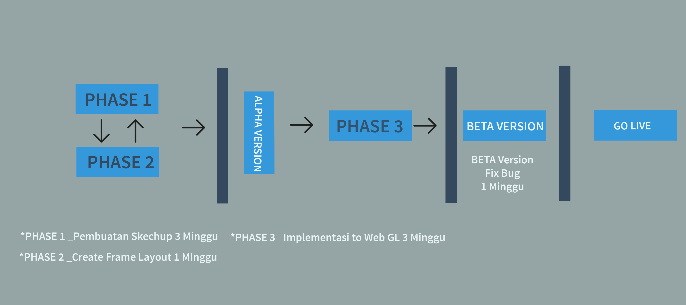

Website 3D - The Ayoma
5 August 2016
Presented
Nunung Nurhayati Sochib
Scope of Project
Use existing Ayoma’s website
Add 1 new page – The Ayoma (logo) and exterior (tower) in 3D panoramic format
Make floor plan image clearer and more artistic with color
3D doll-house model for unit concept with GUI (Graphic User Interface). Users can view the interior (rooms) image in 3D panoramic mode
1 month free guarantee maintenance service
Timeline

THE END OF SLIDE